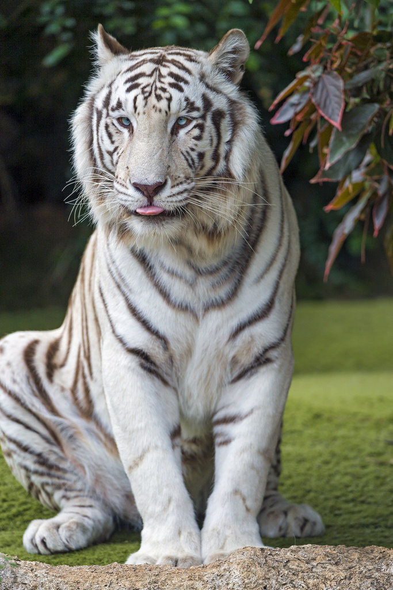
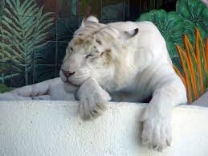
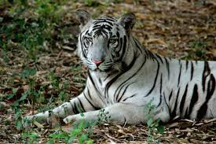
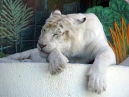
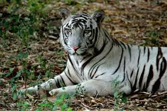
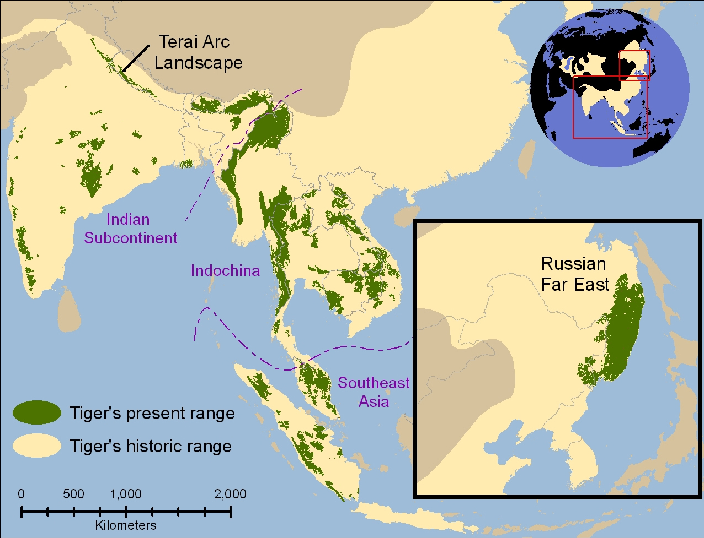

What is a White Tiger?
A white tiger is a type of Bengal Tiger. It is not an albino tiger or a seperate breed of a tiger. It has a creamy white coat, blue eyes and gray or brown-colored stripes. The face of a white tiger is similar to that of any other Bengal tiger. They are only different when it comes to their color. The fur on their face is white, meaning you can easily tell them apart from other Bengal tigers. A white tiger also has very intriguing eyes – they are sapphire blue which combined with their white coat, makes them look very attractive and fascinating. White tigers can weigh up to around 570 pounds, which can add up to a little more than the weight of two giant pandas. They can also grow to be more than 10 feet long.
Where are White Tigers?
The white tiger can be found throughout mostly India but also any other regions bengal tigers are found. Since these tigers are becoming more rare, alot are found in zoo's or sanctuaries which is making them even more endangered. Since tigers are supposed to be found in the wild, keeping them in in places like zoos and sactuaries can be very harmful for them.
 



How are they becoming endangered?
For years together Indian forests proved to be the safe places for white tigers. But in the outer world the situations were changing slowly which were going to be very disastrous for the species of white tiger. During these years India was slowly getting entangled in the slavery of European people who used latest guns instead of traditional weapons like spears – swords for fights. It was very easy to hunt animals like lions and tigers. So to hunt white tigers was also a very normal matter for them. In 1958, their was barely any signs of white tigers living in the forst/ jungles and only in zoos and sanctuaries. Since now the white tiger specie has been held in the zoo for so long, they have adapted to it and it is now very dangerous for them to survive in the wilderness because they do not know how. Also, breeders are starting to breed white tigers and when they are doing this their genetics get messed up in the process and they are born with many deformities (autism, scoliosis, etc.).